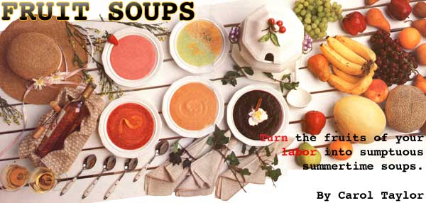
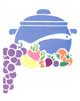
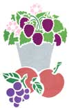

It's no wonder we find fruit irresistible. Botanically, its sole purpose is to see to it that the seeds it encases are widely dispersed by attracting hungry birds, reptiles and mammals, who eat the fruit and transport the seeds. Biologically as well as allegorically, the whole function of fruit is to entice.
It lures humans with two things that we instinctively value: color and sweetness. Unlike most other mammals, we enjoy that unutterable blessing, the ability to perceive color. Fruit has always been a vivid flash in the forest. We so identify fruit with color that the name of one is often the word for the other: orange, peach, apricot, melon, plum.
The surest way to conjure up an accurate image is to specify lime (as opposed to apple) green, cherry red or lemon yellow. Even Homer's "wine-dark sea" drew its mystery from the color of grapes. Food manufacturers, who well understand that if food isn't the right color we won't eat it, make certain that their artificially flavored fruit creations are also artificially colored. Thus our "cherry" and "grape" drinks and gelatins are garish, and our ersatz orange juices border on the electric.
Fruit not only catches our eye for color but appeals to our love of sweets. Of the four basic tastes, human newborns show a decided preference only for sweetness. In the days when the major nutritional concern was not to avoid calories but to get enough to survive, a sweet tooth was an evolutionary adaptation that helped us utilize superb sources of energy. High in sugar, fruit was among our earliest sweets.
SINCE THE ANCIENT GREEKS (WHOSE meals ended with fruit) and the Romans (who preserved whole fruits in honey), we haven't lacked for culinary inspiration in the use of these natural desserts. Indeed, such tempting foods lead us into experimentation (recall that first apple), into continually exploring other ways to enjoy them. To the jams and jellies, the pies and cakes, the cobblers and buckles, we can add a less common variation: soups.
Fruit soups make a fine first course, a memorable dessert or a light summertime lunch. They can be a simple puree of fruit and liquid or a more complex creation involving spices, wines or liqueurs. But even at their fanciest, fruit soups are easy to make, requiring only a blender or food processor and some basic ingredients.
Simmer up soups from the season's fresh fruits and berries.
COLLAGES BY RONNIE SHUSAN AND SANDRA MCKEE
Fruit A variety of fruits lend themselves to soup-all kinds of berries, the stone fruits (peaches, plums, apricots, nectarines, cherries) and melons (cantaloupe, honeydew, watermelon). While fresh fruit is always best and is mandatory when using melons, frozen fruit can yield excellent results. In fact, making soup is one of the best ways to use up the surplus crop that fills your freezer. Even canned fruit works well.
Because a fruit soup has relatively few ingredients, the taste of each one shines through; the quality of the fruit is critical. Underripe, overripe, off-flavored or badly freezer-burned fruit will produce an unhappy result.
Liquid. When melons are pureed, they turn watery. Thus, soups based on them often require no added liquid. But for other fruits, liquid is required: water, milk (whole, low fat and skim are all good), cream, wine, fruit juice (for example, apple or white grape juice) or some combination of these.
Sweetener. As sweet as it is, when fruit is diluted with liquid, it usually requires some added sugar, honey or artificial sweetener. Soups can vary from tart, perhaps for a first course, to very sweet for desserts.
Spice. Most common are cinnamon, nutmeg, allspice and cardamom.
Liquor. Common sources of additional flavor are liquors, especially cognac and rum, and liqueurs-either a contrasting flavor such as Grand Marnier or amaretto, or a brandy derived from the same fruit as the soup.
Toppings. Garnishes include dollops of yogurt, sour cream and, for dessert soups, whipped cream.
So go ahead. Toss some fruit in the blender, add some milk or wine, sweeten to taste, chill well-and sup divinely.
Simple Strawberry Soup
Strawberries, cleaned and hulled Milk Sugar, honey or artificial sweetener
Place the strawberries in a blender, and add enough milk to cover them. Blend until the mixture is smooth. If the soup is too thick, add some more milk, and blend again. Add sweetener, a tablespoon or a packet at a time, until the soup is as sweet as you want it. Chill well.
Strawberry Watermelon Soup 3 cups watermelon cubes 2 cups whole strawberries 1/2 cup orange juice I teaspoon fresh lemon juice 1/2 teaspoon allspice 1/4 teaspoon cinnamon 1/8 teaspoon ginger 11/2 tablespoons sugar 3/4 cup milk
In a food processor or blender, puree the watermelon. Add the remaining ingredients except the milk, and puree until smooth. Transfer the mixture to a bowl, and stir in the milk. Chill well.
Basic Peach Soup 2 ripe peaches, peeled and pitted 1/2 cup milk 1 tablespoon sugar, or other sweetener to taste In a blender or food processor, puree all ingredients until smooth. Chill well.
This recipe makes a fairly thick, sweet soup. For a tarter flavor, use less sugar; for a thinner soup, add more milk.
Strawberry Orange Soup
2 cups strawberries 1/2 cup orange juice 2 teaspoons cornstarch 1/4 cup sugar I teaspoon lemon juice 2 2/3 cup milk 2 tablespoons plain yogurt
In a food processor or blender, puree the berries with the orange juice until smooth, and transfer to a saucepan. Mix a little of the puree into the cornstarch, then add to the remaining puree. Heat, stirring constantly, until the mixture comes to a boil; then cook one minute. Remove from the heat, and whisk in the remaining ingredients. Chill well.
Brandied Peach Soup
4 ripe peaches, peeled and pitted
3/4 cup white wine
1/4 cup orange juice
2-3 tablespoons sugar, depending on sweetness of peaches 1 1/2 ounces brandy or dark rum
Place all ingredients in a food processor or blender, and puree until smooth. Chill well.
Cherry Soup
1 cup water 1/3 cup sugar 1 inch cinnamon stick 1/2 teaspoon grated orange peel 2 cups pitted sour cherries (or a 1-pound can) 1/8 cup red wine
Bring the water and sugar to a boil, and cook until the sugar dissolves into a smooth syrup. Add the cinnamon, orange peel and cherries, and simmer 30 minutes for fresh cherries, 10 minutes for canned. Remove the cinnamon, and puree the soup. Stir in the red wine. Chill thoroughly. Serve with a dollop of sour cream, if desired.
Blueberry Soup
2 cups blueberries
1 1/2 cups water
1/3 cup honey
Juice of I lemon
1 teaspoon grated lemon peel
1 stick cinnamon
Combine the berries and water, and bring to a boil. Add the next 4 ingredients and simmer, uncovered, for 20 minutes, stirring occasionally. Remove from heat, cool, and discard cinnamon. Puree in a blender, then chill thoroughly.
Raspberry Soup 2 cups raspberries 3 A cup water 1/2 cup sugar, or to taste 1/2 cup white wine
In a food processor or blender, puree the raspberries with the water and sugar until smooth. Transfer the puree to a bowl, and whisk in the wine. Chill well.
Cantaloupe Amaretto Soup A rich, wonderful soup from a delightful cookbook, New Recipes From Moosewood Restaurant.
2 fresh, ripe peaches, peeled, pitted and cubed I ripe cantaloupe, peeled, seeded and cubed 1 teaspoon pure almond extract 2 cups cream (or half-and-half or milk) 1/4 cup amaretto liqueur 2 tablespoons fresh lemon juice Pinch of nutmeg or cinnamon (optional)
In a food processor or blender, puree small amounts of the fruit with the liquids until all ingredients are used. The soup should be very smooth. Stir in the nutmeg or cinnamon. Chill several hours before serving.
Minted Cantaloupe Soup
2 1/2 cups peeled, seeded and chopped cantaloupe
1 1/2 teaspoons chopped fresh mint leaves, or 1/2 teaspoon dried
1 1/2 tablespoons sugar
3 tablespoons plain yogurt
1/4 cup dry white wine
Mint sprigs for garnish, if desired
In a food processor or blender, puree the cantaloupe with the chopped mint and sugar until the sugar is dissolved. Transfer the puree to a bowl, and whisk in the yogurt and wine. Chill well. Garnish each serving with a mint sprig, if desired.
Summer Gazpacho
2 medium cantaloupes, peeled, seeded
and cut up
2 large cucumbers, peeled, seeded and
cut up (reserve 1/2 cucumber, and
chop it for garnish)
1 cup plain yogurt
1/4 cup chopped fresh basil or mint
I tablespoon snipped chives
2 large tomatoes
Place the cantaloupe and cucumbers in a food processor or blender, and put until smooth. Transfer the puree to a bowl, and whisk in the yogurt, basil and chives. Peel, seed, and chop the tomatoes, and stir them into the soup. Chill well.
Two-Color Soup
1 cantaloupe, peeled, seeded and cut up
1 small honeydew, peeled, seeded and cut up
1/4 cup orange juice
3 tablespoons fresh lime juice
1/4 cup white wine, divided
2 tablespoons sugar, divided
Place the cantaloupe, orange juice, half the white wine and half the sugar in a blender or food processor, and puree. Set aside in separate bowl. Place the honeydew, lime juice, remaining wine and remaining sugar in a blender or food processor, and puree. Set aside in separate bowl. Refrigerate both purees separately.
To serve, place the purees into separate pitchers or measuring cups. With one in each hand, simultaneously pour the two purees down opposite sides of each serving bowl. Barring deliberate sabotage, the purees will remain separate while being served and eaten.
MINTED CANTALOUPE SOUP RECIPE REPRINTED WITH PERMISSION FROM THE BEST OF GOURMET 1986. COPYRIGHT © 1986, BY CONDE NAST BOOKS: CANTALOUPE AMARETTO SOUP RECIPE FROM NEW RECIPES FROM MOOSEWOOD RESTAURANT. © 1987 BY VEGETABLE KINGDOM, INC., PUBLISHED BY TEN SPEED PRESS, BERKELEY, CA.
|
 © AL CLAYTON |
 |
 |
|
|
|
|